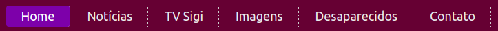
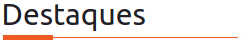
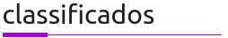
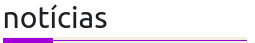
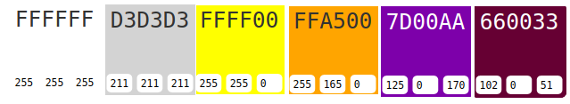
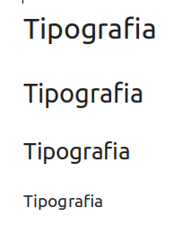
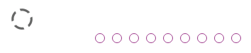

Guia de Estilo
O site de notícias sigivilares.com.br
Introdução
O blog do sigiVilares é um site que apresenta notícias em seu nome sobre a região da Bahia e também faz propaganda de comércios locais e shows. Os mais diversos temas são apresentados para várias faixas-etárias e também possibilita linkagem com redes sociais.
O site usa como guia de estilos cores roxas como delimitador das imagens que linkam as notícias às imagens. Com uma aba de menu bem característica. A imagem primária do site está com um fundo riscado em diagonal na cor cinza claro logo no início do site.
As áreas de destaques do site
Há um cabeçalho, como mostrado na imagem abaixo, usando as principais cores e fontes do site (Fundo Purple com fonte Arial branca).

Há subdivisão dos tópicos entre duas classes principais, sendo a de "Destaque" laranja e de "Classificados em Purple".


A seção de notícias está em padrão com a de classificados e apresenta uma divisão por notícia. Cada notícia tem sua apresentação, a data é mostrada e o título da notícia é colocado em negrito como mostrado. Abaixo da notícia tem uma subseção em tópico para interação de usuários com redes sociais, ela é bem destacada por estar em cor amarela e com os ícones das principais redes sociais.

Paleta de cores:
Para a paleta de cores foram detectadas duas cores principais. Purple #80080 para o menu principal e envolto e Branco #fffafa para o fundo.
Mas há também cores secundárias. Amarelo #ffff00 para o destaque da seção de interação do usuário com as notícias pelas redes sociais. Laranja #ffa500 para a aba única de destaque. Cinza claro #d3d3d3 para os riscos diagonais no fundo da parte inicial do site.

Fontes:
O site é todo feito em com as fontes Arial, Ubuntu e Helvetica com estilo normal. Os tamanhos são subdivididos entre 20px, 18px, 16px e 12px.

Descrição do Guia de Estilo
Legenda:
- D: Descrição.
| ID | Situação problema |
|---|---|
| D01 | Uma má definição do Layout, pois há falta de identificação dm um padrão de grid, além de falta de balanço e ponderação no tamnho dos elementos |
| D02 | Nota-se também um excesso de propagandas no site. Em alguns momentos torna-se até difícil diferenciar o que é propaganda do que é notícia |
| D03 | A falta de um fluxo contínuo de informação traz ao usuário certa falta de orientação, algo fundamental julgando por guia de estilo |
| D04 | Páginas com grandes lacunas em branco, dando confusão quanto ao términdo da página ao usuário |
| D05 | Carregamentos sem informação causam irritação ao usuário |
| D06 | Não há seções bem definidas no site |
| D07 | Ausência de cores visuais |
| D08 | O site é muito longo, ou seja, há uma má divisão das páginas, além da maioria se propagandas não pensadas e mal organizadas |
| D09 | Datas do site estão desatualizadas |
Apresentação das principais falhas
Dentre as principais falhas no site estão a falta de feedback com barras de status dar uma real noção do site ao usuário. Barras de carregamento esternas sem dar nenhuma amostra em tela. Outra questão que traz desleixo ao trabalho é o fato de um site de notícias pegar em seu guia des estilo deixando uma data desatualizada por 5 anos(2014 -2019) como mostrado na última imagem.
